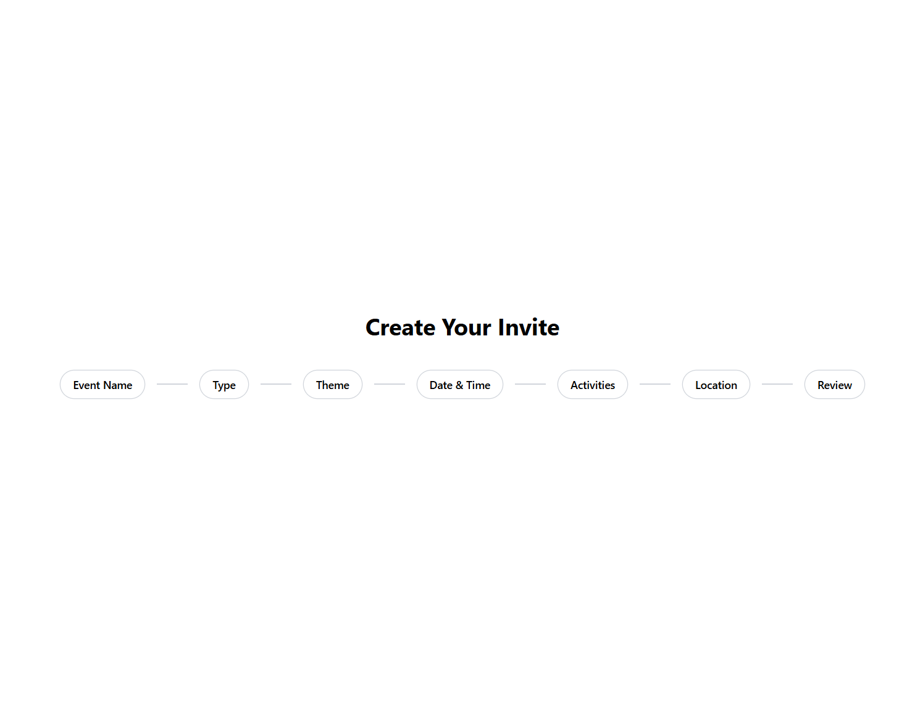
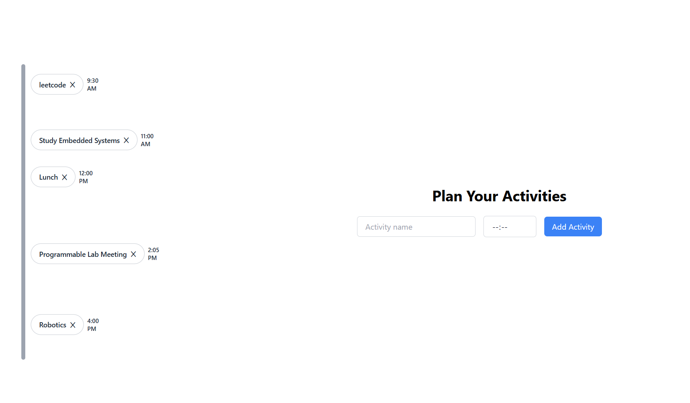

Viva — Event Platform
Mobile-first event invitation and RSVP tracking platform. I lead the technical team, drive architecture decisions, and stay hands-on in the code.
Overview
Viva is a startup building a better way to send event invitations — the gap it's filling is between informal group chats (where RSVPs get lost) and formal calendar invites (which feel stiff for social events). The platform lets you create a styled invitation, share it via a personalized link, and track RSVPs in real time.
I joined as technical lead, which means I'm responsible for the architecture, the team's velocity, and making sure the thing actually ships. We're a small team of four — three engineers and a designer — so "lead" here means being in the code as much as I'm in planning documents.
Technical architecture
Frontend
The frontend is built in React with TypeScript. We chose React because the team was familiar with it and the component model maps well to the kind of card-based UI the app needs. State management is kept simple — React context for auth, local state for most UI, and React Query for server state. We've avoided adding Redux because the app doesn't have the kind of complex cross-component state that justifies it.
Backend
The API is a Node.js/Express server with TypeScript. Each endpoint validates input against a Zod schema before it touches the database, which has caught a number of subtle type mismatches between what the frontend sends and what the backend expects. Authentication is JWT-based with refresh token rotation.
Invitation-linking system
The core technical challenge is the invitation-linking system. Each invitation generates a unique shareable URL tied to a specific event and a specific recipient. When a recipient opens the link, the server resolves their identity, pre-fills their RSVP form, and records the visit. Getting this right required careful thought about how to handle the case where the same person receives the invitation multiple times or shares their link with someone else.


The lead role
Technical leadership on a small team is different from what I expected. The most important thing isn't the architecture decisions — it's keeping everyone unblocked. A teammate stuck on a problem for a day costs more than making a suboptimal tech choice that you can refactor later. I've learned to prioritize synchronous debugging sessions over async code review comments when someone is stuck.
Code review has been a useful teaching tool. Rather than just approving or requesting changes, I try to explain the reasoning behind each comment — not "change this" but "change this because..." It's slower in the short term but the team makes fewer of the same mistakes on subsequent PRs.
Key challenges
The hardest ongoing challenge is scope. There's always more to build — more invitation templates, more RSVP question types, event reminders, calendar sync — and all of it sounds valuable. Keeping the team focused on the features that actually matter for the core use case, rather than building a Swiss Army knife that does nothing particularly well, requires saying no frequently and having clear reasoning for it.